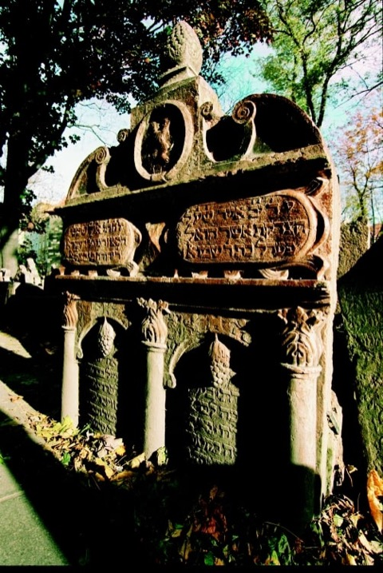
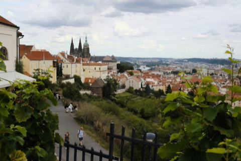
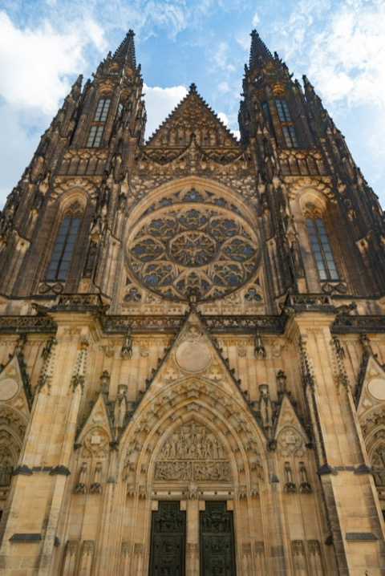
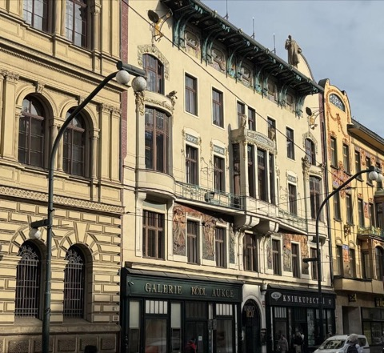
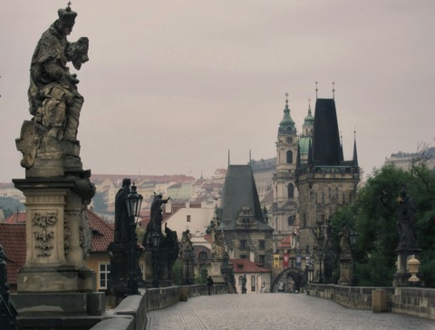
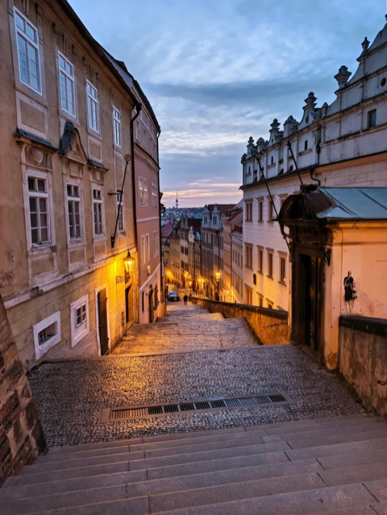

Prag privat entdecken. Auf Deutsch.
Persönlich geführt von Ing. Zuzana Manová – vierzig Jahre Geschichten, die Sie in keinem Reiseführer finden.
- 4,9 auf TripAdvisor
- Privat – nur Ihre Gruppe
Welche Tour passt zu Ihnen?
Jede Tour beginnt mit Ihrer Neugier.
Alle Touren sind privat – nur Ihre Gruppe. Preis auf Anfrage.
-

Altstadt & Jüdisches Viertel3 StundenAltstädter Ring, Astronomische Uhr, Jüdisches Viertel, Karlsbrücke
Weitgehend flach, für die meisten FitnessniveausDiese Tour anfragen -

Prager Burg3–4 StundenHöfe der Prager Burg, Veitsdom, Goldenes Gässchen
Eintrittsstrategie ohne lange WartezeitDiese Tour anfragen -

Prags Deutsches ErbeFlexibelLiterarisches Prag: Kafka, Rilke und Mozarts Prag
Ehrliche Darstellung der deutsch-tschechischen GeschichteDiese Tour anfragen -

Václav-Havel-Tour2,5–3 StundenWenzelsplatz, Národní, Laterna Magika, Lucerna-Passage
Augenzeugenbericht vom November 1989 durch Ihre FührerinDiese Tour anfragen -

Verstecktes Prag2–3 StundenGeheime Gärten, versteckte Innenhöfe, lokale Cafés
Café- oder Gebäckstopp bei Einheimischen inbegriffenDiese Tour anfragen -

Individuelle PrivattourFlexibelIhr Tempo, Ihre Interessen. Persönliche Routenplanung vor der Tour
Für Paare, Familien und Gruppen bis 50 PersonenDiese Tour anfragen
„Zuzanas persönliche Geschichte mit der Stadt macht diese Führung zu etwas völlig Einzigartigem. Absolut unvergesslich.“
„Ein absolutes Highlight unserer Europareise. Ihr Wissen über Architektur und Geschichte ist unübertroffen.“
„Perfekt für unsere Familie. Sie hat die Kinder mit lokalen Legenden fasziniert.“


Prag, erzählt mit Leidenschaft.
Ich bin Ing. Zuzana Manová – deutschsprachige Prag-Expertin und zertifizierte Stadtführerin. Seit 1986 führe ich Besucher durch Prag.
- Offizielle Stadtführerlizenz der Tschechischen Republik
- Akkreditiert am Jüdischen Museum in Prag
- Unterwegs mit Schulklassen, Familien, Vorständen und Filmteams
- Im November 1989 bei den Demonstrationen auf dem Wenzelsplatz
„Prag ist eine vielschichtige Geschichte — lassen Sie uns diese gemeinsam lesen.“
Mehr über Zuzana
Bereit, Prag zu entdecken?
-
1
Schreiben Sie mir
Ihr Wunschdatum, die Gruppengröße und Ihre Interessen – per WhatsApp, Telefon oder Formular.
-
2
Persönliche Antwort
Ich antworte in der Regel innerhalb von 24 Stunden, bestätige die Verfügbarkeit und passe die Tour für Sie an.
-
3
Wir treffen uns
Am Treffpunkt der Tour. Bei individuellen Touren in der Regel an Ihrem Hotel oder einem Wahrzeichen Ihrer Wahl.